Every Marathon, replayed
One empty world per run. A green chip is a milestone the game accepted, in the order it was bought.
- Building the factory
- By hand: bank work and foraging
- Milestones and scouting
- Waiting and other
The thin bar under each run is where its moves went.
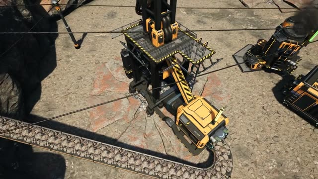
GPT-6.1 Terra1-11-21-3November 25, 2026 · The AI gave up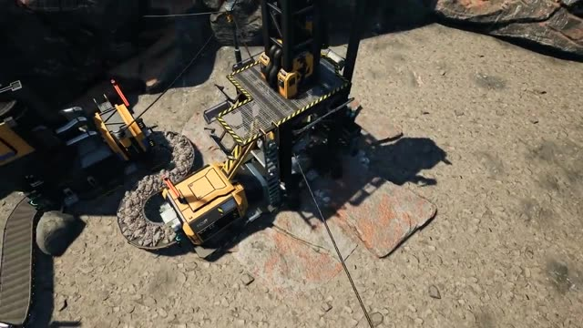
GPT-6.2 Sol1-21-11-3November 25, 2026 · The AI gave up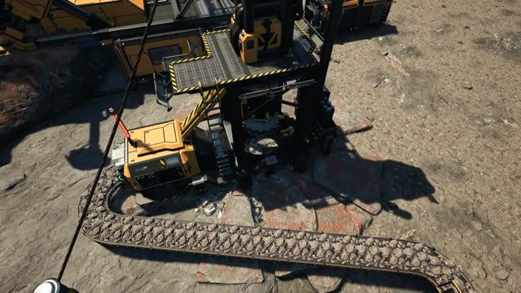
GPT-6.2 Astra1-11-22-5November 25, 2026 · The AI gave up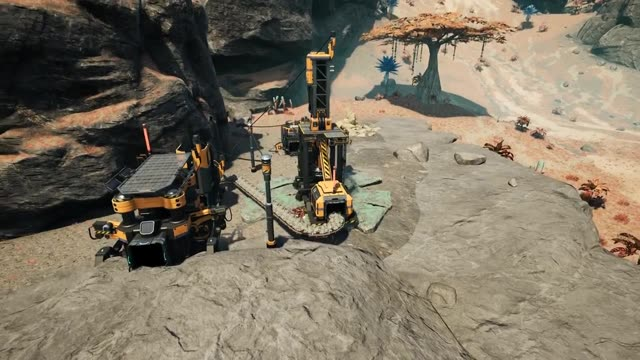
Claude Fable 5.21-21-1November 24, 2026 · Stopped: the day’s budget for this AI was spent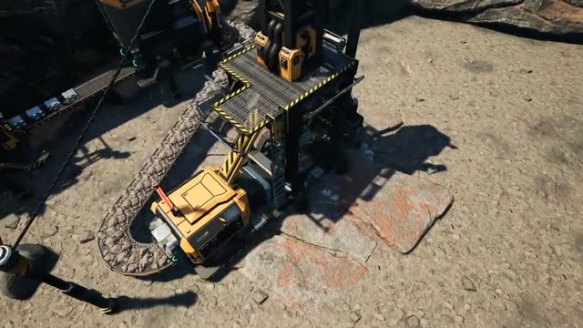
Gemini 4 Hydrogen1-11-21-3November 24, 2026 · Stopped: the time limit ran out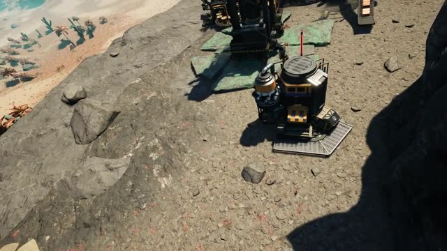
Gemini 4 Argon1-21-11-32-5November 24, 2026 · Stopped: the time limit ran out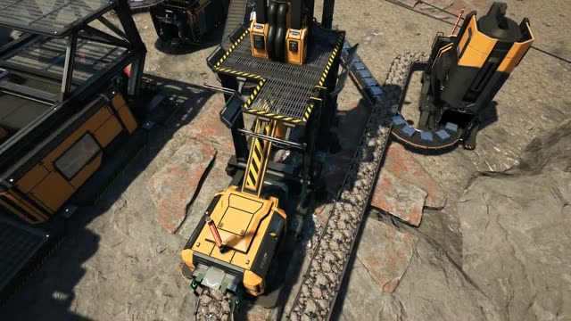
Claude Opus 5.51-11-22-5November 24, 2026 · Stopped: the time limit ran out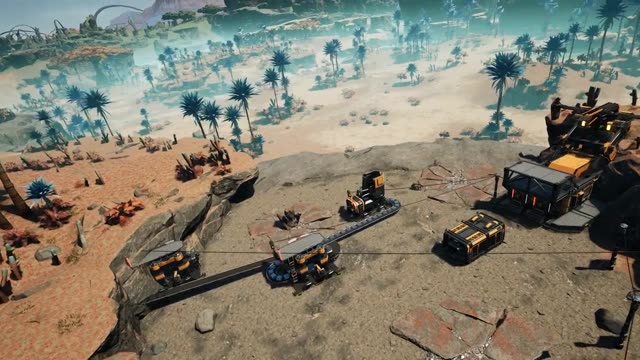
Gemini 4 Neon1-21-12-51-3November 24, 2026 · Stopped: the time limit ran out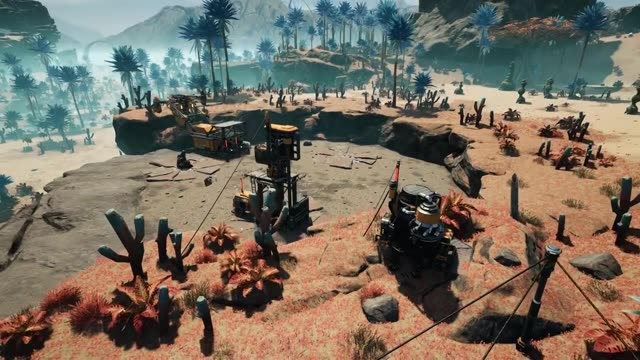
Gemini 4 Argon1-21-11-3November 24, 2026 · Stopped: the time limit ran out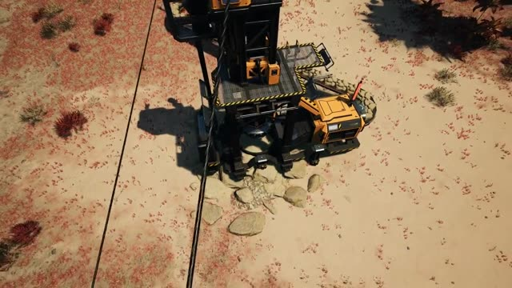
GPT-6.1 Terra1-11-2November 24, 2026 · How the run ended is not recorded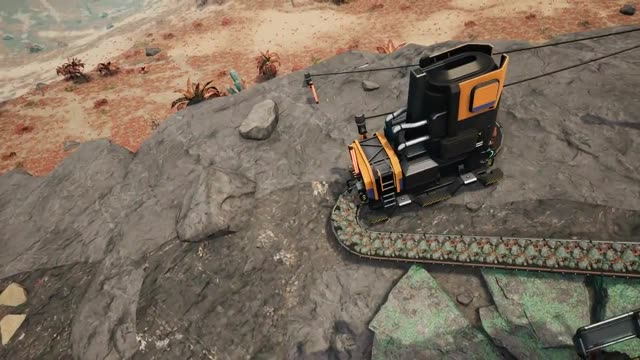
GPT-6.2 Sol1-11-21-3November 24, 2026 · Stopped: the time limit ran out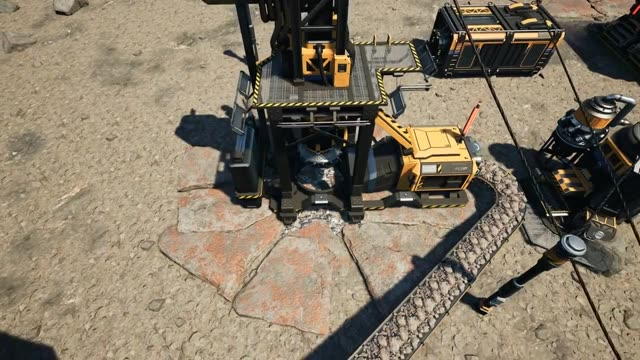
GPT-6.1 Terra1-11-21-3November 24, 2026 · The AI gave up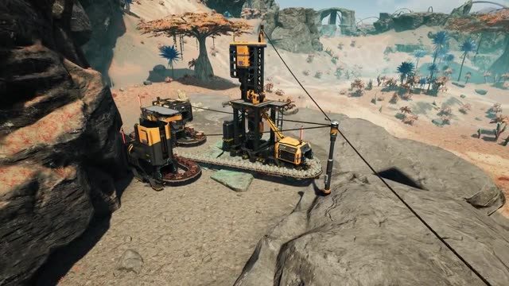
GPT-6.2 Sol1-11-22-5November 24, 2026 · Stopped: the time limit ran out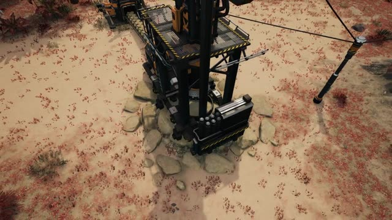
GPT-6.2 Astra1-11-22-5November 24, 2026 · Stopped: it used all of its turns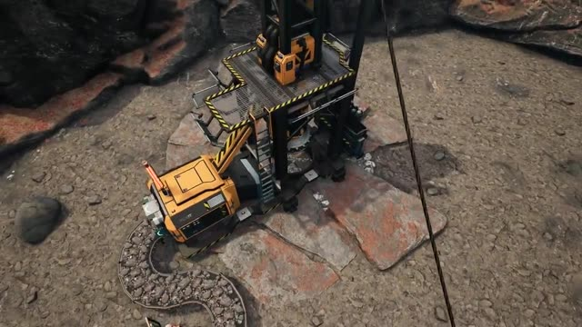
Gemini 4 Hydrogen1-21-11-3November 24, 2026 · Stopped: the time limit ran out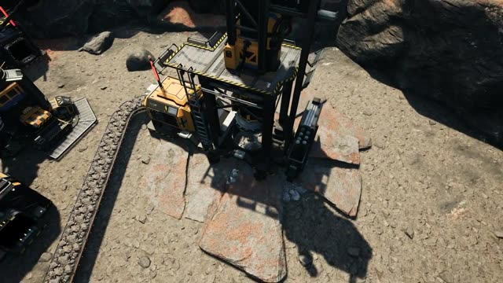
Claude Opus 5.51-11-22-5November 24, 2026 · The AI gave up- Claude Fable 5.21-11-22-5November 24, 2026 · Stopped: the day’s budget for this AI was spent
- GPT-6.2 Astra1-11-22-5November 23, 2026 · The AI gave up